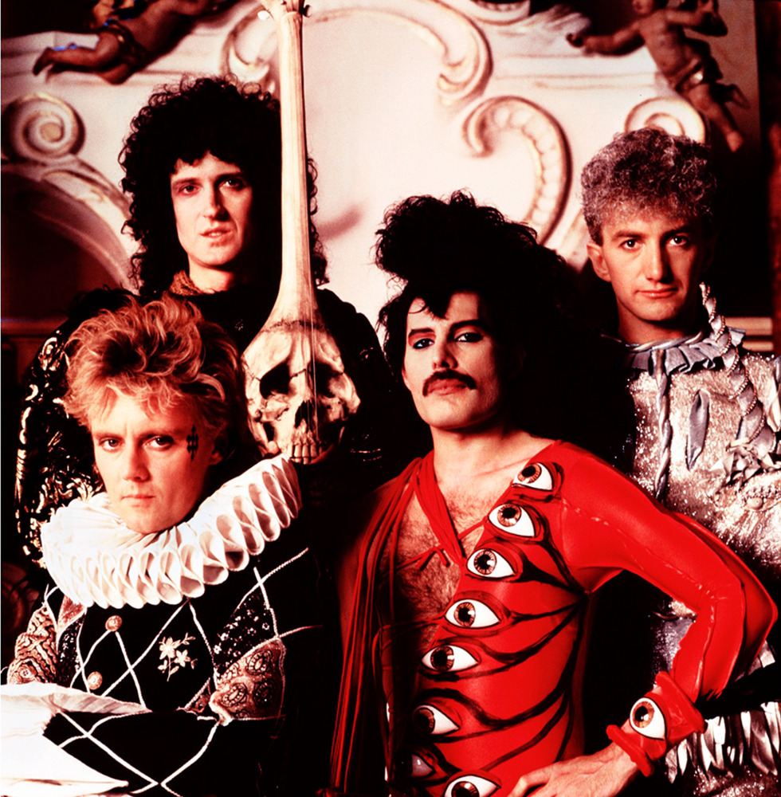

Добро пожаловать на сайт,
посвященный легендарной группе "QUEEN"

Об этой группе написано столько, что вряд ли нам удалось бы добавить что-либо новое.
На нашем сайте Вы найдете историю создания группы, биографии участников, дискографию и фильмографию
группы.Мы предлагаем Вашему вниманию вниманию только достоверную информацию.
Это учебный сайт демонстрационного содержания. Его цель - отработка технологии разметки гипертекстовых документов с помощью языка HTML. Более полную информацию о группе QUEEN Вы найдете на других сайтах. Приносим свои извинения.